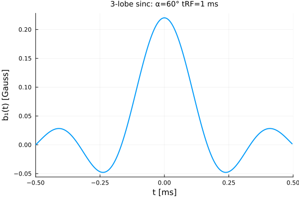
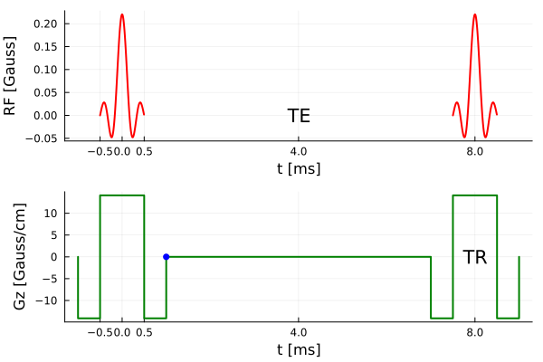
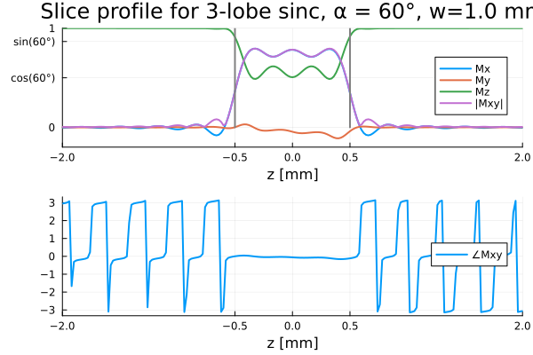
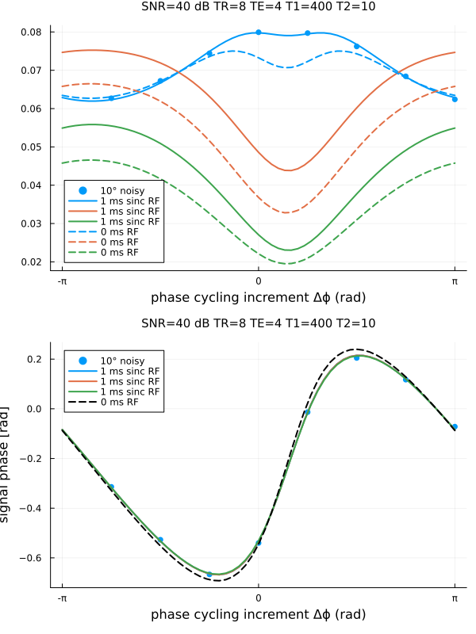
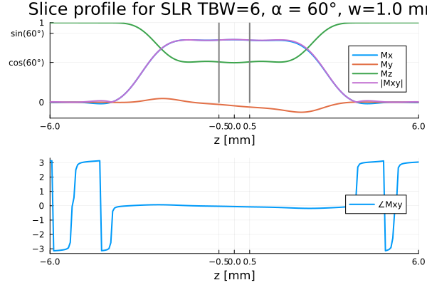
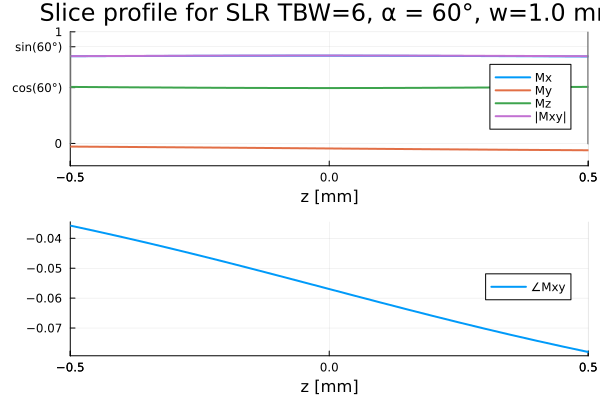
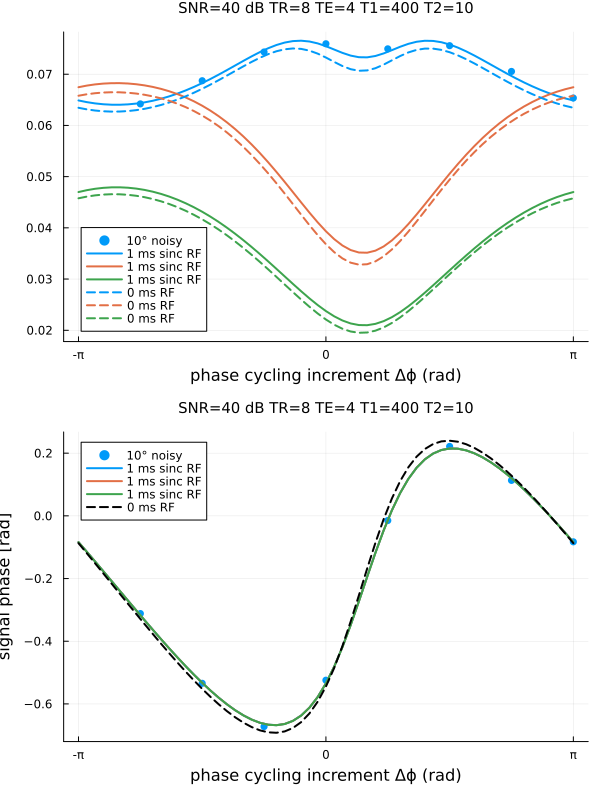

Slice selective excitation
This page explores the effects of
- slice profile for slice-selective 2D imaging
- an idealized slab-selective excitation (ignoring phase encoding effects)
for bSSFP signals in MRI using the Julia package BlochSim
This page comes from a single Julia file: 02-slice.jl.
You can access the source code for such Julia documentation using the 'Edit on GitHub' link in the top right. You can view the corresponding notebook in nbviewer here: 02-slice.ipynb, or open it in binder here: 02-slice.ipynb.
Setup
First we add the Julia packages that are need for this demo. Change false to true in the following code block if you are using any of the following packages for the first time.
if false
import Pkg
Pkg.add([
"BlochSim"
"InteractiveUtils"
"LaTeXStrings"
"LinearAlgebra"
"MIRTjim"
"MRIPulses"
"Optim"
"Plots"
"Random"
])
endTell this Julia session to use the following packages for this example. Run Pkg.add() in the preceding code block first, if needed.
using ADTypes: AutoForwardDiff
using Optim: optimize # must precede BlochSim for extension
using BlochSim: GAMMA, Gradient, GradientSpoiling, Position, Spin, SpinMC
using BlochSim: InstantaneousRF, RF, b1_gauss, rf_slice, rf_gauss, duration
using BlochSim: excite!, spoil!
using BlochSim: bssfp, real_imag, signal, snr2sigma, fit_signal, crb
using LinearAlgebra: diag, dot, norm
using MIRTjim: prompt
using MRIPulses: dzrf
using Plots: default, gui
using Plots: plot, plot!, scatter!, scatter3d!, text
using Random: seed!
default(titlefontsize = 10, markerstrokecolor = :auto, label="", linewidth = 2)
seed!(0);The following line is helpful when running this file as a script; this way it will prompt user to hit a key after each figure is displayed.
isinteractive() || prompt(:draw);Slice-selective case
Array of spins
For a range of z-positions to examine slice profile. Using a short T2 for to myelin water.
Mz0, T1_ms, T2_ms, Δf_Hz = 1, 400, 10, 9 # tissue parameters
make_spins(Mz0, T1_ms, T2_ms, Δf_Hz, zpos) = map(zpos) do z
pos = Position(0, 0, z)
Spin(Mz0, T1_ms, T2_ms, Δf_Hz, pos)
endmake_spins (generic function with 1 method)RF pulse for slice-selection
We begin with a simple truncated sinc pulse. An SLR pulse would have less ripple, but worse transition bands that could greatly affect bSSFP signal.
tRF_ms = 1 # 1 ms
nlobe = 3
α_deg = 60 # flip angle ° (somewhat large for testing)
α_rad = deg2rad(α_deg)
slice_width = 0.1 # cm (1 mm)
Δt_ms = 4e-3; # 4μs dwell time for RF samplingInitial design with truncated sinc (too much ripple)
rf1, rephasing1 = rf_slice(tRF_ms ; α_rad, nlobe, slice_width, Δt_ms)
rtype2 = "$nlobe-lobe sinc";
nsamp = length(rf1.α)
wave = rf_gauss(rf1) # convert rad to gauss
@assert wave ≈ real(wave)
wave = real(wave)
t = ((0:(nsamp-1))/nsamp .- 0.5) * tRF_ms # [-tRF_ms/2, tRF_ms/2)
prf = plot(t, wave,
xaxis = ("t [ms]", (-1,1) .* (tRF_ms/2), ),
yaxis = ("b₁(t) [Gauss]", ),
title = "$rtype2: α=$(α_deg)° tRF=$tRF_ms ms",
)
prompt()Helper function for modeling B1+ scaling kappa below
work2 = (; α_rad, rf = deepcopy(rf1), rf_α = deepcopy(rf1.α), rephasing = rephasing1)
function rf_maker2!(kappa, α_rad)
copyto!(work2.rf.α, work2.rf_α * (kappa * α_rad / work2.α_rad))
return work2.rf, work2.rephasing
end
@assert rf_maker2!(1, α_rad)[1].α == rf1.αTiming diagram for bSSFP
The point marked by the blue disk is where bssfp first computes the steady-state magnetization, followed by precession/decay to time TE to return the signal value.
TR_ms, TE_ms = 8, 4; # bSSFP scan parameters
function plot_sequence(prephasing, rf, rephasing)
tp = duration(prephasing)
tb = duration(rf)
tr = duration(rephasing1)
x = [-tp-tb/2 -tp-tb/2 -tb/2 -tb/2 tb/2 tb/2 tb/2+tr tb/2+tr]
x = [x'; TR_ms .+ x'] # show a 2nd excitation block for a nicer plot
gp = prephasing.gradient.z
gb = rf1.grad.z
gr = rephasing.gradient.z
y = [0 gp gp gb gb gr gr 0]
y = [y'; y']
xaxis = ("t [ms]", (-tp-tb/2, TR_ms+tb/2+tr), [-tb/2, 0, tb/2, TE_ms, TR_ms])
tmp = real(rf_gauss(rf))
prf = plot(; xaxis, ylabel = "RF [Gauss]", color = :red,
annotate = (TE_ms, 0, text("TE")),
)
plot!(prf, t, tmp; color = :red)
plot!(prf, t .+ TR_ms, tmp; color = :red)
pgr = plot(x, y; xaxis, ylabel="Gz [Gauss/cm]", color = :green,
annotate = (TR_ms, 0, text("TR")),
)
scatter!(pgr, [tb/2+tr], [0], marker = :circle, color = :blue)
return plot(prf, pgr, layout = (2,1), widen = true)
end
pseq = plot_sequence(rephasing1, rf1, rephasing1)
prompt()Excite the spins with the RF, then apply rephasing gradient
function do_excite!(spins, rf, rephasing)
map(spins) do spin
excite!(spin, rf)
spoil!(spin, rephasing)
end
end;Plot slice profile
This plot shows the magnetization at the end of the rephasing gradient, so there is somewhat more T2 decay. The gray lines show the slice of interest.
function plot_profile(spins, zpos::AbstractArray, slice_width::Real, rtype)
mx = map(spin -> spin.M.x, spins)
my = map(spin -> spin.M.y, spins)
mz = map(spin -> spin.M.z, spins)
mmag = @. sqrt(mx^2 + my^2)
mpha = @. atan(my, mx)
zmm = 10zpos # mm
wmm = 10slice_width # mm
zfmm = maximum(zmm) - minimum(zmm) # zlim for plot in mm
xaxis = ("z [mm]", (-1,1) .* (zfmm/2),
[-zfmm/2, -wmm/2, 0, wmm/2, zfmm/2])
ytick = ([0, cos(α_rad), sin(α_rad), 1],
["0", "cos($(α_deg)°)", "sin($(α_deg)°)", 1])
pmag = plot(; xaxis, yaxis = ("", (-0.2,1), ytick), legend = :right)
plot!(zmm, mx, label = "Mx")
plot!(zmm, my, label = "My")
plot!(zmm, mz, label = "Mz")
plot!(zmm, mmag, label = "|Mxy|")
smm = 10slice_width
plot!([-1,-1]*smm/2, [0, 1], color=:gray) # show slice FOV
plot!([+1,+1]*smm/2, [0, 1], color=:gray)
ppha = plot(; xaxis, legend = :right)
plot!(zmm, mpha, label = "∠Mxy")
plot_title = "Slice profile for $rtype, α = $(α_deg)°, w=$(10slice_width) mm"
return plot(pmag, ppha; layout = (2,1), plot_title)
end
zpos2 = range(-0.2, 0.2, 201) # z positions (cm) for 2D slice-select case
spins = make_spins(Mz0, T1_ms, T2_ms, Δf_Hz, zpos2)
do_excite!(spins, rf1, rephasing1)
pp2 = plot_profile(spins, zpos2, slice_width, rtype2)
prompt()The simulation shown above is similar to Fig. 5 of Pauly et al. 1989, (or would be if we set zfov larger), but perhaps a bit worse due to the short T2 considered here. Pauly notes that minor gradient adjustments could lead to better refocusing. This simulation ignores gradient slew-rate constraints that must be considered in practice.
Examine slice-profile effect on qMRI with bSSFP
kappa = 1 # also estimate the B1+ factor
xt = (; Mz0, T1_ms, T2_ms, Δf_Hz, kappa) # tuple
x = collect(Float64, xt) # unknowns in vector5-element Vector{Float64}:
1.0
400.0
10.0
9.0
1.0Hand-crafted scan "design" with various phase-cycling increments and flip angles:
Δϕ_rads = (1:8)/8 * 2π .- π # phase-cycling factors
α_degs = [10, 30, 50] # flip angles
α_rads = deg2rad.(α_degs)
design = Iterators.product(Δϕ_rads, α_rads)
num_scans = length(design) # number of different scans24Helper for InstantaneousRF bSSFP signal model todo: currently must allocate because InstantaneousRF is immutable
_bssfp0(x, Δϕ_rad, α_rad) =
bssfp(x[1:4]..., TR_ms, TE_ms, Δϕ_rad, InstantaneousRF(x[5] * α_rad));Helper for bSSFP model with slice-selective RF pulse.
- Here we must sum across spins the effect of each (Δϕrad, αrad) pair.
- This version models flip-angle dependent slice profile effects.
function _bssfp1(x, Δϕ_rad, α_rad, scale, rf_maker!, zpos)
rf, rephasing = rf_maker!(x[5], α_rad) # kappa
spins = make_spins(x[1:4]..., zpos) # todo: mutable Spin would avoid alloc
return scale * sum(spins) do spin
bssfp(spin, TR_ms, TE_ms, Δϕ_rad, (rephasing, rf, rephasing))
end
end
function signal_c0(x)
_bssfp(Δϕ_rad, α_rad) = _bssfp0(x, Δϕ_rad, α_rad)
return map(splat(_bssfp), design)
end
signal_ri0(x) = real_imag(vec(signal_c0(x)))
function signal_c1(x, scale, rf_maker!, zpos)
_bssfp(Δϕ_rad, α_rad) = _bssfp1(x, Δϕ_rad, α_rad, scale, rf_maker!, zpos)
return map(splat(_bssfp), design)
end;Scale factor since excited slice occupies a small fraction of z FOV:
zfov2 = maximum(zpos2) - minimum(zpos2)
scale2 = zfov2 / slice_width / length(zpos2)
args2 = (scale2, rf_maker2!, zpos2)
signal_ri2(x) = real_imag(vec(signal_c1(x, args2...)));2D data simulations and fitting
The effect is quite significant.
yb = signal_ri2(x) # noiseless data account for slice-profile effects
yb = reshape(yb, :, 2); yb = complex.(yb[:,1], yb[:,2]); # re-make complex!
snr_db = 40
σ = snr2sigma(snr_db, yb)
y2 = yb + 1σ * randn(ComplexF64, size(yb));Slice profile effects on bSSFP
function plot_bssfp(args, y)
# Magnitude
xaxis = ("phase cycling increment Δϕ (rad)", (-π, π), ((-1:1).*π, ["-π", "0", "π"]))
pmism = plot( ; xaxis, widen = true,
title = "SNR=$snr_db dB TR=$TR_ms TE=$TE_ms T1=$T1_ms T2=$T2_ms",
)
label = reshape(map(x -> "$(x)° noisy", α_degs), 1, :)
scatter!(Δϕ_rads, abs.(y); label)
Δϕ_fine = range(-1, 1, 61) * π # phase-cycling factors for plot
@time tmp0 = Base.Fix{1}(_bssfp0, x).(Δϕ_fine, α_rads')
@time tmp1 = ((Δϕ, α) -> _bssfp1(x, Δϕ, α, args...)).(Δϕ_fine, α_rads')
color = (1:length(α_degs))'
plot!(Δϕ_fine, abs.(tmp1); label="$tRF_ms ms sinc RF", color)
plot!(Δϕ_fine, abs.(tmp0); label="0 ms RF", line=:dash, color)
# Phase (fairly small effect of slice-selective excitation):
pmisa = plot( ; xaxis, widen = true, ylabel = "signal phase [rad]",
title = "SNR=$snr_db dB TR=$TR_ms TE=$TE_ms T1=$T1_ms T2=$T2_ms",
)
scatter!(Δϕ_rads, angle.(y); label)
plot!(Δϕ_fine, angle.(tmp1); label="$tRF_ms ms sinc RF", color)
@assert angle.(tmp0[:,1]) ≈ angle.(tmp0[:,2]) ≈ angle.(tmp0[:,3]) # same!
plot!(Δϕ_fine, angle.(tmp0[:,1]); label="0 ms RF", line=:dash, color=:black)
return plot(pmism, pmisa, layout=(2,1), size=(600, 800))
end
pb2 = plot_bssfp(args2, y2)
prompt()Model fitting
Using instantaneous RF model, despite data having slice-selection effects.
Function for fitting noisy signal
rand20(x::Number) = x * (1 + 0.2 * (rand() - 0.5) / 0.5) # ± 20% variability
ntry = 10
function do_fit(signal_ri::Function, i::Int, yb, σ::Real)
seed!(i) # to ensure that both models fit the same data
y = yb + 1σ * randn(ComplexF64, size(yb))
x0fun = i -> rand20.(x)
return fit_signal(signal_ri, x0fun, real_imag(vec(y)); ntry)
end;Simulations
Because of the serious model mismatch illustrated above, the parameter estimates are badly biased.
It seems that the slice profile effects (or perhaps finite RF pulse effects) may be quite significant.
round2(x) = round(x; sigdigits=3)
mean2(x) = sum(x, dims=2)[:,1] / nrep
std2(x) = sqrt.(sum(abs2, x .- mean2(x), dims=2)[:,1] / nrep)
if !@isdefined(xr0) || false
nrep = 100
@time xr0 = stack([do_fit(signal_ri0, i, yb, σ) for i in 1:nrep])
mean0 = mean2(xr0)
std0 = std2(xr0)
end
crb2 = sqrt.(diag(crb(signal_ri0, x, σ)))
tab2 = [ # estimation results table
:param :value :μ0 :σ0 :σcrb;
collect(keys(xt)) collect(xt) round2.([mean0 std0 crb2]);
]6×5 Matrix{Any}:
:param :value :μ0 :σ0 :σcrb
:Mz0 1 0.969 0.104 0.0897
:T1_ms 400 305.0 64.1 72.4
:T2_ms 10 9.37 0.0436 0.0741
:Δf_Hz 9 9.18 0.048 0.0776
:kappa 1 0.975 0.109 0.08543D case
Now use an SLR pulse to excite a slab that has fairly uniform profile across the thin center slice.
slab_width = 0.6; # cm (6 mm slab)SLR pulse design
- Using
:st(small tip) option relevant for flip < 90 degrees. - Using prephasing / rephasing gradient from sinc pulse.
rtype3 = "SLR TBW=$(2nlobe)"
slr = dzrf( ; n = length(rf1), tb = 2nlobe, ptype = :st, ftype = :ls)
@assert slr ≈ real(slr)
slr = real(slr)
rf3_sinc, rephasing3 = rf_slice(tRF_ms ;
α_rad, nlobe, slice_width = slab_width, Δt_ms)
rf3 = RF(α_rad * slr * b1_gauss(1, Δt_ms), Δt_ms, 0, rf3_sinc.grad)
work3 = (; α_rad, rf = deepcopy(rf3), rf_α = deepcopy(rf3.α), rephasing = rephasing3)
function rf_maker3!(kappa, α_rad)
copyto!(work3.rf.α, work3.rf_α * (kappa * α_rad / work3.α_rad))
return work3.rf, work3.rephasing
end
@assert rf_maker3!(1, α_rad)[1].α == rf3.αPlot slab-select profile
Using a large array of spins here: z positions (cm) for 3D slab-select plot:
zpos3_plot = range(-1, 1, 201) * slab_width
spins = make_spins(Mz0, T1_ms, T2_ms, Δf_Hz, zpos3_plot)
do_excite!(spins, rf3, rephasing3)
pp3 = plot_profile(spins, zpos3_plot, slice_width, rtype3)
prompt()Zoom into the center "slice" of interest
The profile is quite flat, though again the value is a bit low due to T2 decay effects.
zpos_slice = range(-0.05, 0.05, 21) # z positions (cm) # 1mm slice in a big slab
spins = make_spins(Mz0, T1_ms, T2_ms, Δf_Hz, zpos_slice)
do_excite!(spins, rf3, rephasing3)
pp4 = plot_profile(spins, zpos_slice, slice_width, rtype3)
Examine bSSFP signal for 3D case
Here there is better agreement with InstantaneousRF model, though still some small scaling difference.
Scale factor since excited slice occupies a small fraction of z FOV:
scale3 = 1 / length(zpos_slice)
args3 = (scale3, rf_maker3!, zpos_slice)
signal_ri3(x) = real_imag(vec(signal_c1(x, args3...)))
yb3 = signal_ri3(x) # noiseless data account for slice-profile effects
yb3 = reshape(yb3, :, 2); yb3 = complex.(yb3[:,1], yb3[:,2]); # re-make complex!
σ3 = snr2sigma(snr_db, yb3)
y3 = yb3 + 1σ3 * randn(ComplexF64, size(yb3));
pb3 = plot_bssfp(args3, y3)
prompt()Fit InstantaneousRF model to 3D data
The T1 parameter estimates are perhaps somewhat better?
if !@isdefined(xr3)
nrep = 100
@time xr03 = stack([do_fit(signal_ri0, i, yb3, σ3) for i in 1:nrep])
mean03 = mean2(xr03)
std03 = std2(xr03)
end
tab3 = [ # estimation results table
:param :value :μ0 :σ0 :σcrb;
collect(keys(xt)) collect(xt) round2.([mean03 std03 crb2]);
]6×5 Matrix{Any}:
:param :value :μ0 :σ0 :σcrb
:Mz0 1 1.08 0.0578 0.0897
:T1_ms 400 419.0 46.1 72.4
:T2_ms 10 9.42 0.0425 0.0741
:Δf_Hz 9 9.18 0.0482 0.0776
:kappa 1 0.956 0.0492 0.0854This page was generated using Literate.jl.